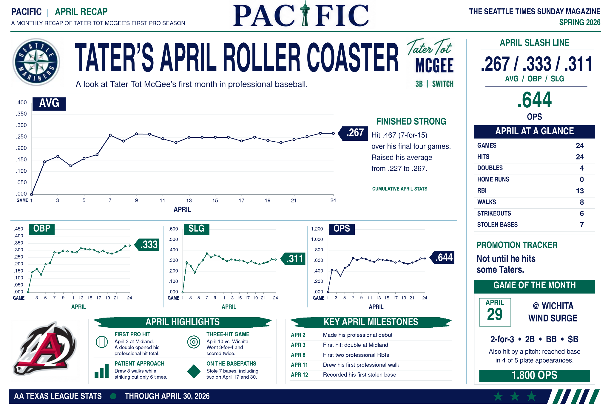
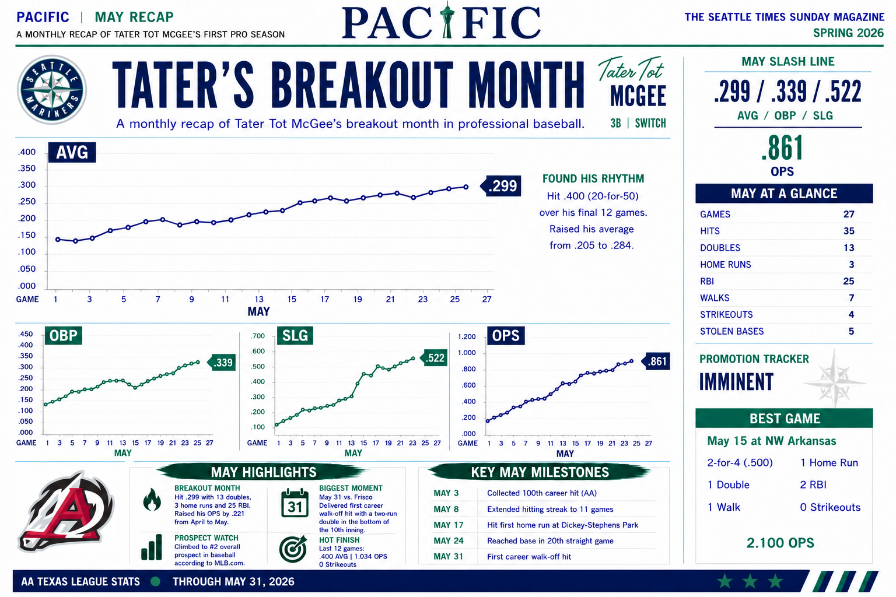

Tater Tot Chronicles · A PACIFIC Career Archive
Sandpoint · Fresno · Seattle
TATER TOT CHRONICLES
A family and baseball archive
Home
The McGee Story
Weekly Write-Ups
Monthly Recaps
Stats
Career Milestones
Photos
Personal Snapshots
Monthly Recaps
The season in numbers
Monthly PACIFIC recaps from the professional season of Tater Tot McGee.
April 2026
Tater's April Roller Coaster
.267
AVG
.333
OBP
.311
SLG
.644
OPS

April at a glance
24 games, 24 hits, 4 doubles
13 RBI, 8 walks, 6 strikeouts
7 stolen bases
Finished the month by hitting .467 over his final four games
Game of the Month: April 29 at Wichita — 2-for-3, double, walk, stolen base, 1.800 OPS
May 2026
Tater's Breakout Month
.299
AVG
.339
OBP
.522
SLG
.861
OPS

May at a glance
27 games, 35 hits, 13 doubles
3 home runs and 25 RBI
7 walks, only 4 strikeouts
Hit .400 over the final 12 games of the month
Best Game: May 15 at Northwest Arkansas — 2-for-4, HR, 2B, 2 RBI, walk, 0 strikeouts, 2.100 OPS